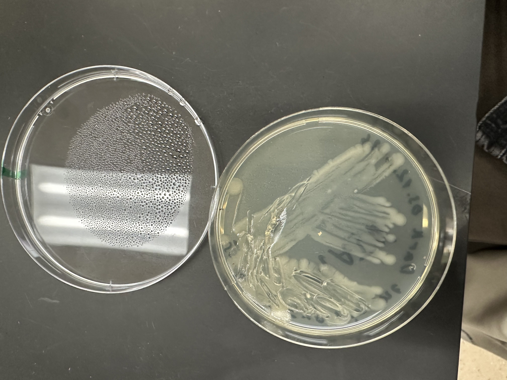
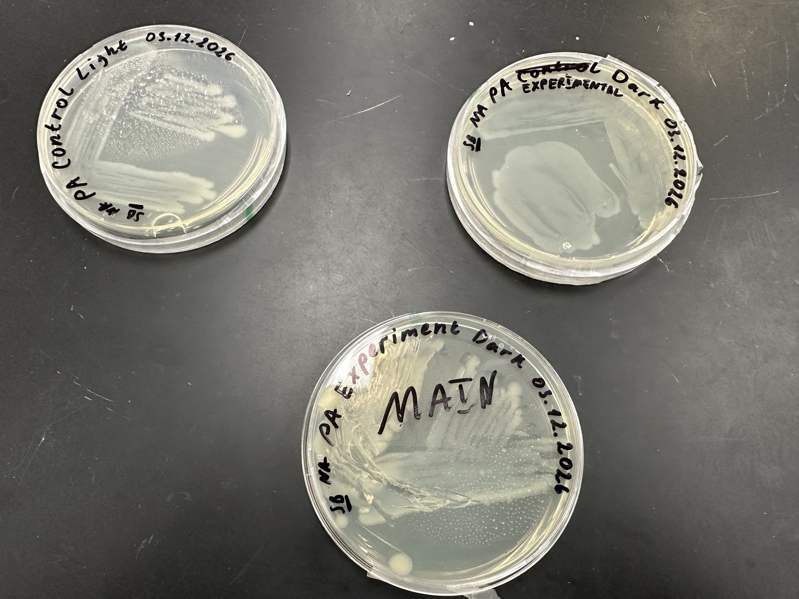
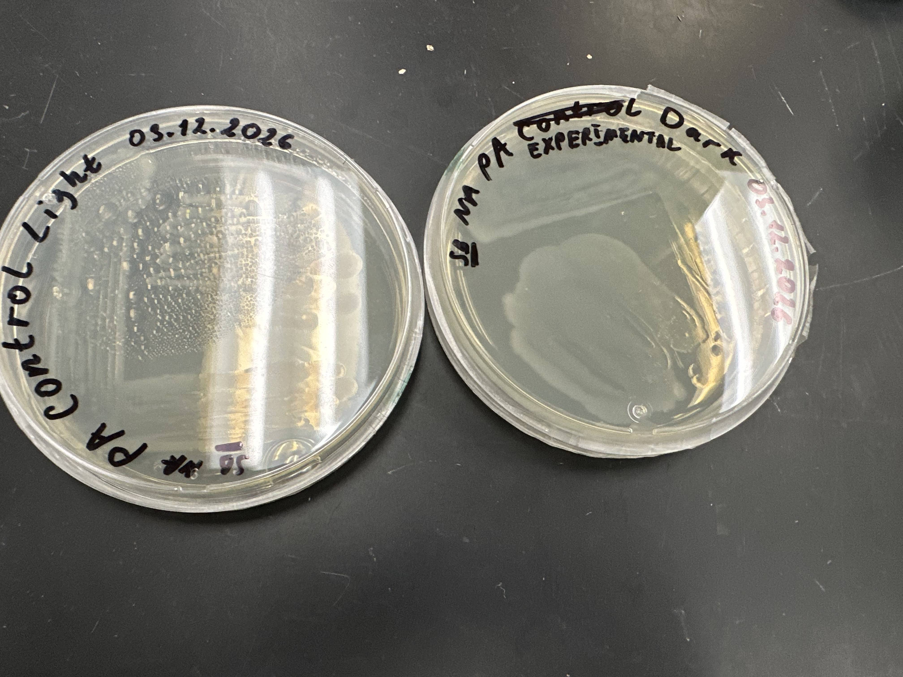
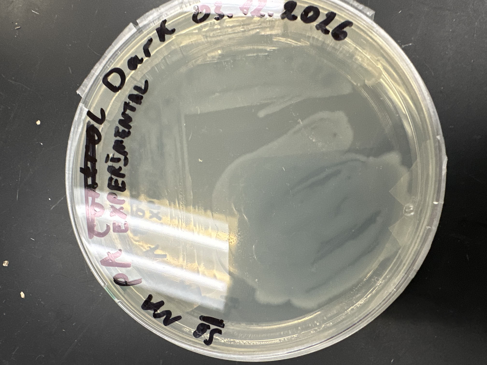
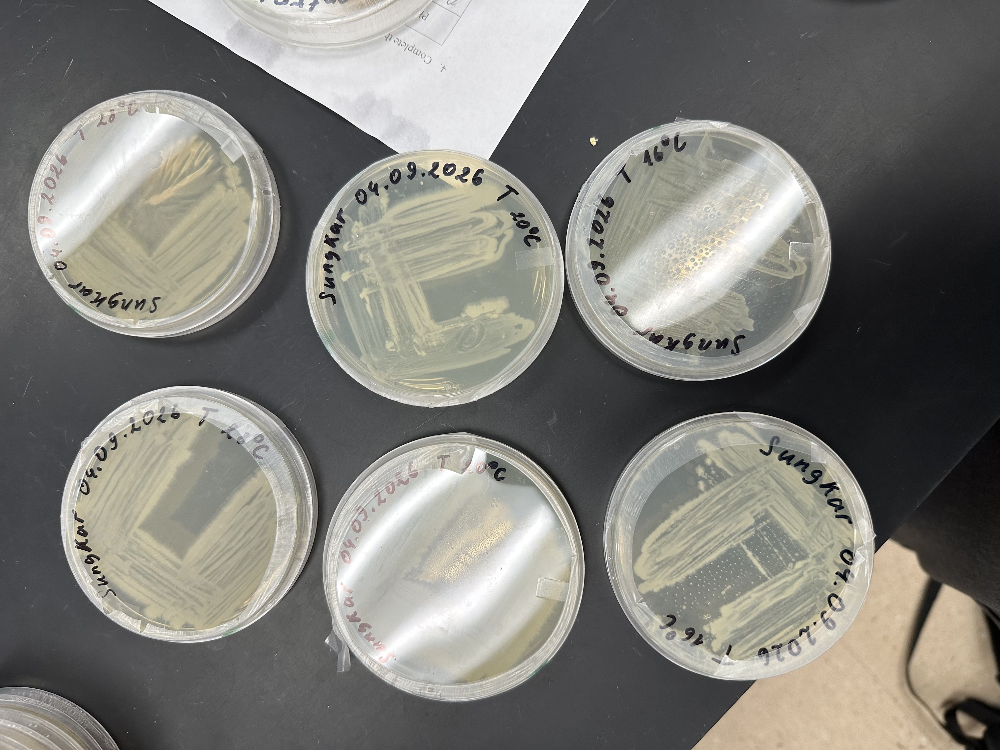
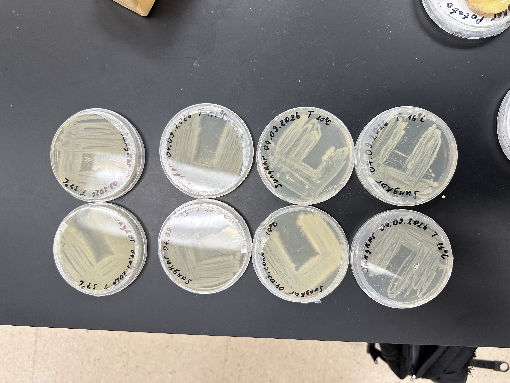
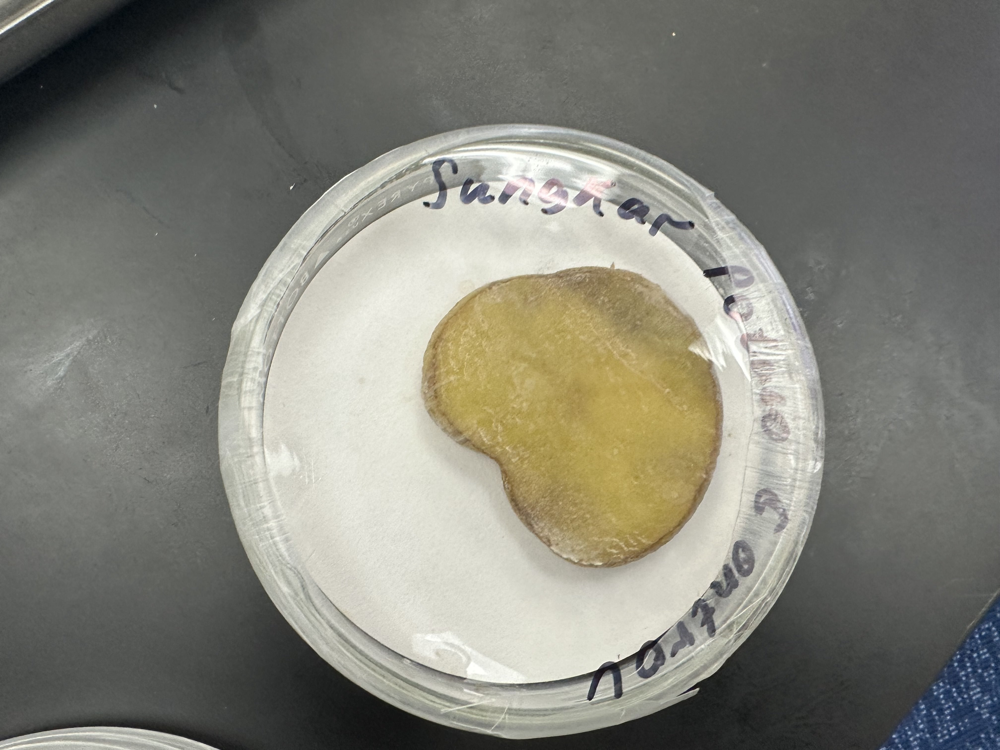
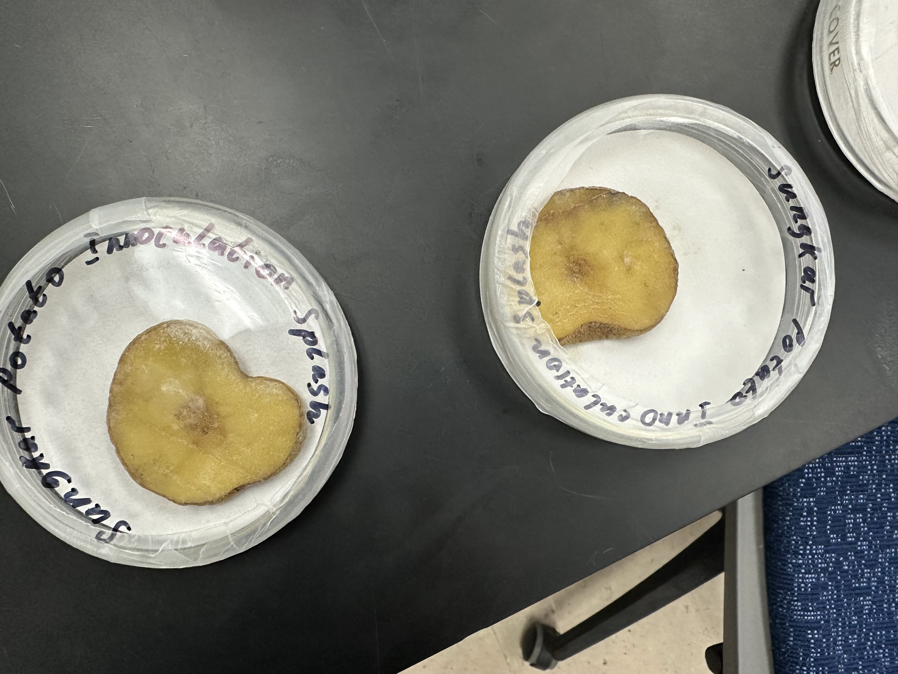
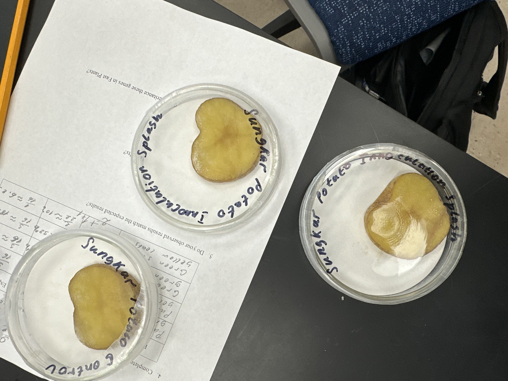

Over a single semester, I worked with a working culture of Pectobacterium carotovorum and examined it under three controlled experiments testing its sensitivity to light, its growth in different temperature ranges, and its capacity to infect and spread in potato tissue. The results, condensed here, aim to display physiological capacities of one of agriculture’s most destructive plant pathogens.

Pectobacterium carotovorum is a Gram-negative, rod-shaped bacterium (1-3 μm in length) of the family Pectobacteriaceae. It produces pectolytic enzymes that hydrolyze pectin between individual plant cells, which causes cells to separate, a disease that is known as bacterial soft rot. This disease can infect a wide range of hosts (carrot, potato, tomato, leafy greens, squash and other cucurbits, onion, green peppers, African violets, etc.) and is responsible for billions of dollars in annual produce losses worldwide.
On nutrient agar, the working strain produces circular, smooth colonies, cream to off-white in color. Colonies typically reach 2-3 mm in diameter after 24-48 hours at 28°C. Unlike its relative P. aeruginosa, P. carotovorum does not produce fluorescent pigments under UV light.
It is also an excellent organism to study plant-microbe interactions. The species produce a wide variety of cell-wall-degrading enzymes—pectate lyases, polygalacturonases, cellulases, and proteases—that contribute to destruction of host tissue. Studying it allows us to explore enzymatic interaction at the cellular scale.
The base culture was maintained inside of the nutrient agar plate and held at room temperature (25°C - 26°C). Plates were prepared using the sterile loop technique under a burner flame to preserve colony purity and avoid environmental contamination.
Working plates were sealed with Parafilm, labelled with the date and condition, and stored inside of the lab between lab sessions. P. carotovorum is nutritionally undemanding and grows reliably on agar without any supplementation.
Three experiments were conducted to characterize bacteria’s physiological properties: (1) sensitivity to different light conditions, (2) thermal tolerance across a 16-37 °C gradient, and (3) its virility on potato tissue.
Six nutrient agar plates were inoculated with the same grown culture of P. carotovorum using a three-quadrant streak technique, taking care to apply roughly equal inoculum to each plate. In the experiment, two plates were left on lab shelves open under continuous daylight. Two plates were wrapped in aluminum foil to block all visible light and placed near to the light-exposed plates so that conditions other than light were as similar as possible. The remaining two plates were placed in a light incubator.
Agar batch, inoculum source, incubation temperature (~25 °C), and incubation time (48–72 h) were held constant. Light exposure was the only independent variable between groups, and the foil-wrapped plates served as the control.
All three groups grew similarly. After one week, all six plates showed confluent streak growth with cream-colored, circular colonies 2-3 mm across. I did not observe any significant differences in colony density, color, or shape between light-exposed, foil wrapped, and normal plates. No contamination was present in either group.
The results did not support alternative hypotheses, so the original hypothesis was retained. This outcome makes sense considering what is already known about P. carotovorum: it is an organism with no photoreceptor system known to regulate vegetative growth, so light conditions should not directly influence its growth. Therefore, the result is consistent with established knowledge rather than a sign that the experiment has failed. An interesting follow-up would be to repeat an experiment using germicidal UV-C light, which will cause direct DNA damage and produce a clearly measurable effect.



Each nutrient agar plate was streak-inoculated with a base culture and partitioned equally among four temperature treatments (n = 2 per treatment): 16 °C, 20 °C, 30 °C, and 37 °C. Plates were transferred to dedicated temperature incubators for the duration of the week.
Inoculation technique, agar batch, plating volume, and incubation duration were held constant; temperature constituted the sole independent variable. The 30 °C treatment, corresponding most closely to the established optimum, served as the reference condition. Colony density and structure were assessed visually and documented photographically at the end of an experiment.
A monotonic increase in colony density was observed up to 30 °C. Plates at 16 °C produced sparse, faintly visible streaks; at 20 °C, growth was denser but remained significantly tempered. At 30 °C, plates exhibited dense, confluent, opaque streaks that most closely resemble the characteristics of healthy P. carotovorum. At 37 °C, growth was indistinguishable relative to 30 °C, with thinner streaks and slightly different colony margins, which is consistent with the upper margin of the organism’s temperature tolerance.
All four treatments yielded measurable growth, confirming the broad thermal range of the species. However, effects were distinctly non-linear, with a clear peak of bacterial growth at 30 °C.
The hypothesis was supported with growth being maximum at 30 °C and declined at both temperature extremes, including 37 °C. The resulting growth pattern is consistent with the established knowledge on P. carotovorum. The attenuation observed at 37 °C signifies significant biological different: in contrast to P. aeruginosa, which thrives at human body temperature, P. carotovorum approaches the upper limit of viability at 37 °C — a limitation that is widely cited as one reason that it does not endanger humans.


Potato slices were surface-sterilized with 70% ethanol, peeled, and prepared using a sterile blade. Slices were placed on moistened sterile filter paper within individual petri dishes to establish a microenvironment favorable to bacterial activity. Two dishes received a splash inoculation of P. carotovorum liquid culture (24-h nutrient broth) applied directly to the cut surface. A third dish, designed as the negative control, received an equivalent volume of sterile nutrient broth administered in the same fashion.
All dishes were sealed using Parafilm and incubated at room temperature (~25°C) for one week. Tissue coloration, surface texture, structural integrity, and any visible bacterial overgrowth were documented photographically throughout the incubation period.
Inoculated slices displayed significant browning and darkening localized around the inoculation place and progressed to a softened, glistened texture within one week which are early signs of early-stage soft rot. Control slices darkened only slightly and uniformly around the cut surface.
Some colonies were not visible on the potato slice surface but discoloration of the inoculated tissue was localized and uneven — features absent in the control
The different response between inoculated and control slices is consistent with the established behavior of the species: secretion of pectate lyases that hydrolyze potato tissue, which makes it produce a characteristic macerated, water-soaked phenotype. Because cut potato tissue naturally browns due to enzymes like polyphenol oxidase, a better experiment would use heat-killed bacteria to separate true bacterial effects from normal effects of exposure to oxygen. Using measurable outcomes — such as the size of the softened area, weight loss, or change in pH around infection size — would make the results more tangible, so the current findings suggest pathogenicity but are not yet definitive.



Across three experiments, Pectobacterium carotovorum behaved as expected in close accordance to predictions drawn from existing microbiological literature. The main value of the work resides not in the novel discovery but in the demonstration that these predictions are reproducible using standard undergraduate methodology.
The temperature range experiment yielded the most informative result with the best colony development measured at 30 °C and the visible attenuation at 37 °C which suggest that bacteria exhibit a thermal “optimum”. Comparing it to Pseudomonas aeruginosa is helpful because even small differences in how bacteria handle temperatures and how their cell membranes are structured can separate plant-infecting species from those that infect humans.
The potato inoculation experiment produces the most unclear results. Even though inoculated slices consistently browned more than the controls, the setup didn’t include enough controls to reliably tell whether this was due to bacterial tissue breakdown or just natural browning due to polyphenol oxidase. A stronger design would include a heat-killed bacteria control as a way to measure how much softening occurs.
The light experiment showed no visible effect, which is still meaningful given what we already know about Pectobacterium carotovorum. Finding no response to visible light helps narrow things down and suggest that testing germicidal UV-C light is more likely to produce a detectable effect. Results of this experiment can guide how experiments can be conducted and focused in the future.
More importantly, this semester reinforced the idea that the organism behaves according to its environment and not to the experimenter’s expectations. It grows when conditions allow and stops when they don’t, so the goal is to design experiments cleanly enough that the results reflect the organism’s behavior rather than the researcher’s assumptions.